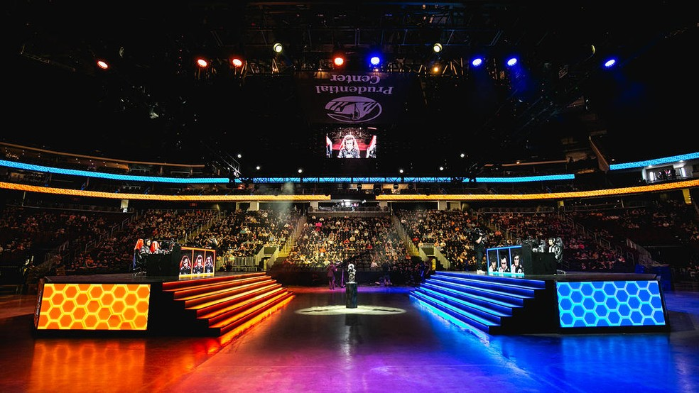

Relembre escândalos de manipulação de resultados no e-sports
O match fixing, ou simplesmente manipulação de resultados, é uma prática que já gerou diversos banimentos e até prisões no cenário competitivo de jogos como League of Legends (LoL), Counter-Strike: Global Offensive (CS:GO) e StarCraft II. Pelo dinheiro fácil, jogadores chegam a forçar a própria derrota para lucrar com apostas. Mas essa prática é proibida pelas desenvolvedoras e ligas, e em alguns países é considerada crime. Relembre, a seguir, cinco casos de match fixing que viraram escândalos e marcaram a história dos esports.
iBUYPOWER (Counter-Strike: Global Offensive)
Em agosto de 2014, aconteceu uma competição de CS:GO na América do Norte chamada de CEVO Professional League, que estava em sua quinta temporada. Uma das participantes era uma equipe chamada de iBUYPOWER, considerada uma das melhores do continente na época. Ela era favorita em um confronto que seria realizado contra a NetcodeGuides.com, mas foi estranhamente surpreendida e derrotada por 16-4. Logo apareceram rumores de que a equipe da iBUYPOWER havia apostado na própria derrota e deixado a Netcodeguides vencer a partida em troca do dinheiro da aposta.
A confirmação da manipulação de resultado veio em janeiro de 2015, graças ao jornalista Richard Lewis, que trabalhava em um site de apostas na época e confirmou que maior parte dos jogadores da iBUYPOWER realmente havia realizado a aposta com aquele resultado. Como consequência, sete pessoas, entre integrantes da iBUYPOWER e outros envolvidos, foram banidas permanentemente dos torneios oficiais da Valve. O único jogador da iBUYPOWER que se livrou da pena foi Tyler "Skadoodle" Latham devido à confirmação de que ele não havia concordado com o esquema.
Escândalo e prisão (StarCraft II)

Em 2015, o cenário competitivo sul-coreano de StarCraft II foi atingido por um enorme escândalo de manipulação de resultados. Jogadores e treinadores combinavam resultados em troca de dinheiro em um esquema que se repetiu em diversas competições no país, como a ProLeague, a Global StarCraft II League e a KesPa Cup. Basicamente, diversos jogadores foram acusados de perderem propositalmente partidas para que pudessem receber suas recompensas, o que acabou sendo confirmado posteriormente.
Choi "YoDa" Byung, Choi "BBoongBBoong"Jong Hyuk, Park "Gerrard" Oi Shik, Jung "Bbyong" Woo Yong e Lee "Life" Seung Hyun, os principais jogadores e treinadores envolvidos, foram banidos de forma indefinida das competições de SCII. Mais tarde, todos, com exceção de Bbyong, foram presos devido à lei sul-coreana considerar a manipulação de resultados como crime. No caso de Bbyong, foi dito que ele colaborou com as autoridades, evitando assim a sua prisão.
Caso Condi (League of Legends)
Em junho de 2019, o chinês Xiang “Condi” Ren-Jie, jogador da LGD Gaming na época, foi banido por 18 meses do competitivo de League of Legends (LoL). Ele foi descoberto em um esquema de manipulação de resultados em uma competição chinesa chamada de NEST 2019, onde foi acusado de forçar a derrota de sua equipe em algumas partidas da competição. Segundo Condi, ele havia cometido a infração em apenas um jogo da NEST, mas acabou sendo chantageado pelo manager Song “Hesitate” Zi-Yang a fazer o mesmo em outras oportunidades.
Por ter chantageado Condi a manipular mais resultados, Hesitate foi suspenso permanentemente do competitivo de LoL. Outros dois jogadores da Academy da LGD, Fu “Fdy” Ding-Yuan e Tang “1ntruder” Sheng, também foram descobertos no esquema e punidos por dez meses cada de todas as competições.
Captain Zack e Ally (Super Smash Bros. Ultimate)
Zack "CaptainZack" Lauth é um famoso jogador norte-americano de Super Smash Bros. for WiiU, onde ele teve suas maiores conquistas, e de Super Smash Bros. Ultimate. Infelizmente, ele acabou se envolvendo em casos de manipulação de resultados em duas competições: Prime Saga e MomoCon 2019. Zack pediu para que Elliot "Ally" Carroza-Oyarce, jogador com quem ele tinha relações na época, perdesse propositalmente seus confrontos contra o japonês Sota "Zackray" Okada e o norte-americano Nairoby "Nairo" Quezada. Diferente da maioria dos casos de match fixing, este não teve dinheiro envolvido.
A razão do pedido foi devido a turbulências na relação secreta dos dois jogadores, que tinham uma diferença considerável de idade, gerando polêmica na comunidade do game quando descoberta. Zack também se sentia frustrado por não estar tendo boas performances, enquanto Ally vinha em uma pequena crescente em sua carreira. Por isso, Zack pediu para Ally perder propositalmente os dois jogos citados, história que foi confirmada por ele via Twitter, em agosto de 2019. A polêmica levou Zack a ser banido de torneios de Super Smash Bros realizados pela 2GG, e Ally optou pela aposentadoria.
Polêmica na Austrália (Counter Strike: Global Offensive)
Seis pessoas foram presas na Austrália, entre os dias 21 e 23 de agosto de 2019, por conta de casos de manipulação de resultados em torneios de CS:GO. Os acusados tinham entre 19 e 22 de idade, e não tiveram suas identidades reveladas pela polícia local. Todos foram detidos, ouvidos pelas autoridades e liberados logo em seguida, mas as investigações prosseguiram. Dependendo da gravidade do caso, o match fixing na Austrália pode levar uma pessoa a passar até 10 anos atrás das grades.
Inicialmente, autoridades e sites de apostas começaram a investigar os possíveis casos de manipulação em março de 2019. Nesse período, foi descoberto que os envolvidos haviam agido em pelo menos cinco partidas, enquanto mais de 20 apostas haviam sido realizadas. Os jogadores acusados apostavam contra eles mesmos e perdiam propositalmente para que eles e os demais envolvidos ficassem com o dinheiro.